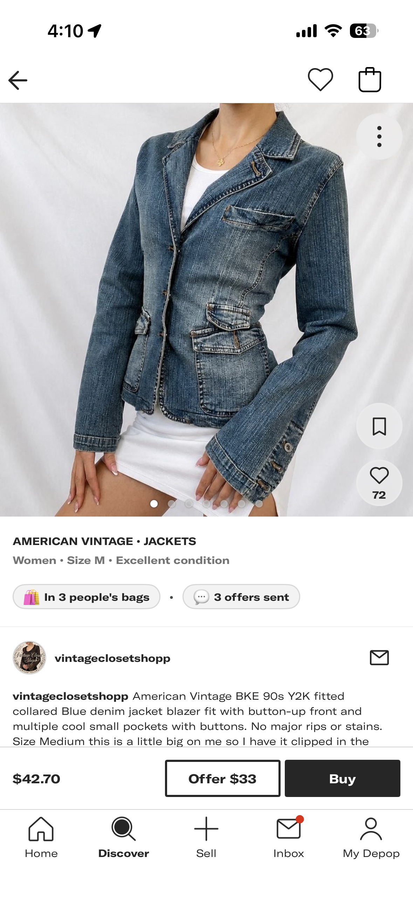
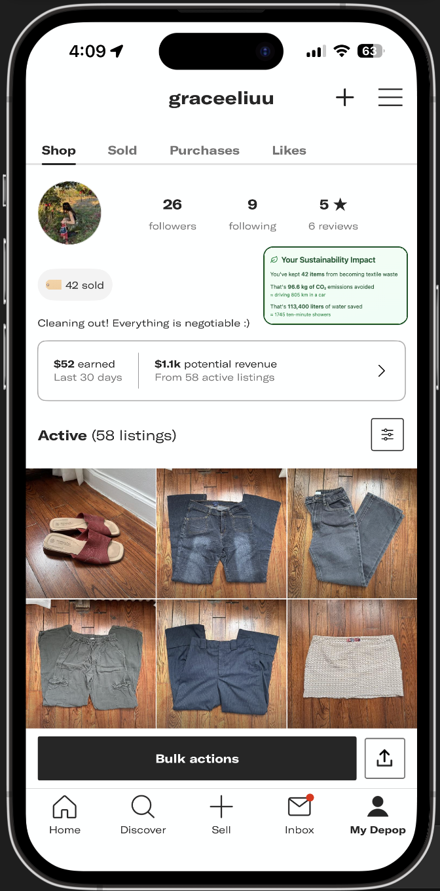
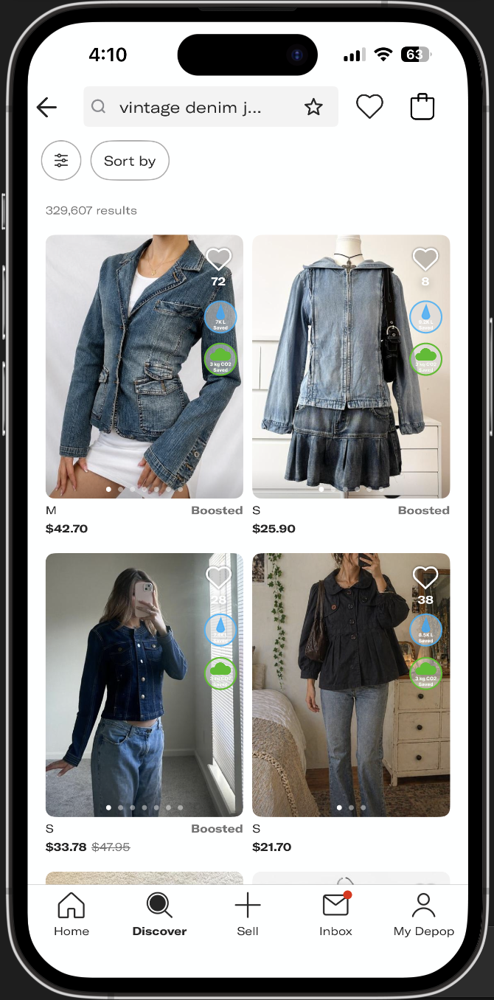

TLDR
- The question
- Across reselling platforms, which approaches to communicating sustainability actually shift user perception and behavior?
- What the competitive analysis found
- Across resale platforms, sustainability is treated as marketing, not as merchandising. Depop, despite having the rigorous infrastructure, has the largest gap between what it does in terms of sustainability and what its users see.
- What concept testing found
- Sustainability messaging lifts brand trust more than purchase intent. Item-specific claims on the PDP were the strongest concept, but credibility depends on the numbers. The profile tracker shifted selling and loyalty, not buying, while search badges underperformed.
- What I recommend
- An item-level impact module on the PDP, with an explicit comparison and visible methodology, followed by a personal impact tracker in My Depop.
Project overview
As an avid thrifter and secondhand shopper, you can often find me scrolling on Depop in my free time, searching for one-of-a-kind clothing pieces — whether for myself or as gifts for others.
Depop is an online marketplace where individuals can buy and sell secondhand items, from clothing to homeware to art. Sitting at the intersection of fashion and conscious consumerism, Depop has become the go-to destination for fashionistas, eco-conscious, and thrifty shoppers alike.
In this case study, I explore how Depop can better emphasize the environmental benefits of shopping secondhand. While secondhand shopping is inherently more sustainable than buying new, most users often lack the data to understand exactly what is happening and their impact.
This project focuses on how sustainability information can be meaningfully integrated into the platform to educate users and encourage environmentally conscious shopping habits. I decided to do this case study because I wanted to dive deeper into a product that I use and love, but also has a mission that I resonate with.
The project unfolded in two rounds. I first ran discovery research (interviews and a survey) to understand how users perceive sustainability on Depop. I later returned to the project to answer the question discovery left open — not whether users want sustainability information, but how it should be presented — through a competitive analysis of five resale platforms and concept testing of three low-fi feature concepts with Depop users.
Overview & objective
Depop mission
"Sitting at the intersection of style, value, and sustainability, we want Depop to be the most exciting place for anyone to engage with fashion and trends in a more circular way. That means placing our community front and centre. Every day, they're creating unique looks, new trends and making new from old."
Depop's current state of sustainability
Depop is on a mission to make fashion more sustainable by promoting creativity, circularity, and eco-friendly practices. They're taking bold steps like offsetting all their greenhouse gas emissions from shipping, packaging, and operations, while also setting ambitious goals around circular fashion and sustainable business practices.
Despite these efforts, many users don't realize the positive environmental impact their purchases on Depop are making. This creates an opportunity to bridge the gap between Depop's actions and how users experience sustainability on the platform.
Research problem
While secondhand shopping is inherently sustainable, Depop does not effectively communicate the environmental impact of shopping on its platform. Depop's mission emphasizes "style, value, and sustainability," but I noticed that sustainability often takes a backseat in users' minds. From personal experience and observation, users primarily associate Depop with affordability and unique fashion finds, as the platform lacks clear messaging or data to show exactly how their purchases positively impact the environment. Because of this gap, Depop misses the opportunity to pull in more eco-driven shoppers and influence the average user's decision-making.
Objective
- Explore how to make sustainability a more prominent part of Depop's user experience.
- Help users understand the environmental impact of buying secondhand on Depop to boost awareness and engagement.
- Identify the sustainability metrics users care about most (e.g., waste reduction, CO2 savings, water savings).
- Explore how sustainability awareness impacts shopping decisions.
- Develop recommendations for integrating sustainability information into Depop's platform to better engage and retain users.
- Understand how other resale platforms communicate sustainability, and test which approaches resonate with Depop users.
Phase 1: Discovery research
Research methodology
For my research methodology, I conducted a combination of user interviews (N = 3) and surveys (N = 4).
I prefer a mixed-method approach as I use qualitative research to explore and define the problem space, and quantitative research to measure and validate the defined problem. This allows me to understand comprehensively how Depop users perceive sustainability and what might encourage them to shop secondhand more often.
User interviews
I started with user interviews to understand how people perceive Depop and its connection to sustainability. I conducted three interviews that focused on understanding why users shop secondhand on Depop, their current understanding of the environmental benefits of shopping secondhand, and their reactions to sustainability metrics. The goal was to uncover the "why" behind user behaviors, and having a conversation with the participant allowed me to dig deeper into behaviors, preferences/values, and their decision-making.
Surveys
To complement user interviews, I used surveys (made using Qualtrics) to reach a broader audience and gather quantitative data on user awareness, motivations, and interest in sustainability metrics. The survey included 10 questions and collected responses from 4 participants, which created a quick idea of user attitudes that helped validate the opinions identified in the interviews.
Who is this for?
Verity Robbins
Social Media Manager at an eco-friendly tech startup
- Age
- 25 years old
- Location
- New York City
- Income
- $60,000/year
- Education
- B.S. Film and Media Studies
- Tech savviness
- High
Bio
"I've always been passionate about sustainability, so I try to make eco-friendly choices whenever I can. As a broke new grad, thrifting and secondhand shopping are my go-to ways to save money and find unique clothing. I love the idea that I'm helping the planet, but I wish I could see exactly how my choices make a difference. Sometimes, it feels like platforms don't do enough to show users how they're contributing to sustainability."
Wants and needs
- Clear, specific information about how her shopping choices impact the environment.
- A way to track her total sustainability contributions over time.
- A platform she can trust to align with her eco-conscious values.
Frustrations
- Not being able to see how her purchases actually help the environment.
- Uncertainty about whether sellers on platforms prioritize sustainability.
- Feeling like sustainability efforts aren't well communicated or emphasized.
Analysis
To make sense of everything I collected from the interviews and surveys. I took a step-by-step approach to break it all down.
For the user interviews, I transcribed responses and used open coding to identify common themes, such as user motivations, pain points, and perceptions of sustainability. I then grouped these themes into broader categories, like "lack of awareness" or "desire for impactful metrics," to uncover patterns and align findings with Depop's sustainability goals.
For surveys, I used simple statistical analysis to highlight trends, such as which sustainability metrics people found most interesting (waste reduction was the favorite) or how many users had noticed sustainability messaging or content on Depop's platform (spoiler: not many). This gave me a way to validate some of the ideas I saw in the interviews and figure out how widespread certain opinions were.
Insights
Use the tabs on each insight to see what the interviews and surveys showed.
User awareness of sustainability
Users generally acknowledge the environmental benefits of secondhand shopping but lack specific knowledge or confidence in Depop's impact.
- Users associate secondhand shopping with sustainability but don't think beyond general ideas like recycling clothes.
- Awareness stems more from social trends or assumptions than from explicit communication by Depop.
- Most users haven't come across impactful sustainability messaging on Depop.
- Many users are aware of secondhand shopping's benefits but haven't noticed clear sustainability information from Depop.
- Some users find metrics like waste reduction motivating, while others need more compelling data to influence behavior.
- Clear and specific sustainability metrics (e.g., CO2 savings, waste reduction) to educate users.
- More visible communication about Depop's sustainability efforts to build trust and awareness.
User motivations and pain points
Sustainability is a secondary motivator, with affordability and unique finds being the primary drivers for most users. However, pain points related to sustainability messaging reduce its influence.
- Primary motivations: affordability, finding unique items, and reducing closet clutter.
- Sustainability is a secondary or tertiary consideration for most users.
- A subset of users finds sustainability metrics motivating and would feel better about their purchases if this information were included.
- Other users feel metrics wouldn't strongly influence their behavior unless the data were particularly compelling.
- Users struggle to find relevant or clear sustainability information when shopping on Depop.
- Depop doesn't currently provide enough tangible data to make the environmental benefits of secondhand shopping feel meaningful
- More engaging and accessible sustainability messaging integrated into the shopping experience.
- Information that builds confidence in Depop's contributions to sustainability.
Metrics/features to motivate behavior
While users appreciate the idea of sustainability metrics, they need to be presented in a way that's engaging and actionable to truly influence behavior.
- Metrics like CO2 or waste reduction could make users feel better about purchases and reduce buyer's remorse.
- Users expressed interest in tracking the cumulative impact of their purchases over time, such as monthly summaries of total savings.
- Waste reduction is the most desired metric, followed by CO2 savings.
- Users expressed interest in cumulative impact trackers (e.g., monthly reports of total savings).
- Features that display sustainability metrics prominently at key touchpoints (e.g., product pages, checkout summaries, or user profiles).
- Tools to track cumulative impact (e.g., total CO2 saved from purchases).
Jobs to be done
JTBD 1: User Awareness of Sustainability
- Situation
- When I shop for secondhand items online
- Motivation
- I want to see clear and accessible information about how my purchases benefit the environment
- Outcome
- So that I feel informed and confident that I'm making a positive impact.
JTBD 2: User Motivations and Pain Points
- Situation
- When I am shopping for clothes
- Motivation
- I want to find affordable and unique items that match my style while knowing my purchases support sustainability
- Outcome
- So that I can shop with confidence and enjoy items that reflect my individuality and values.
JTBD 3: Features to Motivate Behavior
- Situation
- When I shop secondhand
- Motivation
- I want to see metrics like waste reduction or CO2 savings and track the total impact of my purchases over time
- Outcome
- So that I feel good about my choices, stay motivated, and understand the bigger picture of my contribution to sustainability
Synthesis of insights
From my research, I discovered the main themes and needs that create opportunities for Depop to better promote its sustainability efforts.
- Gaps in awareness
- While Depop users appreciate the idea of sustainability, it's not front and center in their shopping experience. Most users know that secondhand shopping is better for the environment but can't connect their individual actions to tangible environmental benefits. This gap isn't because users don't care—it's because Depop doesn't provide the information or tools to make sustainability feel personal, impactful, or even noticeable.
- Sustainability is secondary
- A deeper look into user motivations revealed that sustainability is a secondary motivator when secondhand shopping. People turn to Depop for affordability, unique finds, and sometimes even decluttering their closets. However, there's an opportunity to nudge sustainability higher on the list of motivators by making it more visible, actionable, and rewarding.
- Lack of sustainability information and messaging
- Users struggle to find sustainability information on Depop. This missing link between Depop's sustainability efforts and user awareness isn't just a lost opportunity — it's a chance to turn casual shoppers into advocates for sustainable fashion. By addressing these gaps, Depop can better align with its mission and deepen its connection with its users.
Initial hypothesis
Discovery pointed me toward an initial recommendation:
Sustainability metrics on product pages
Make sustainability metrics like CO2 savings, water savings, or waste reduction visible on every product page. For example, a line of text or a badge could say, "This purchase saves X lbs of CO2 compared to buying new."
Why: Users want simple, clear, and immediate data to understand the environmental impact of individual purchases.
Rather than treating this as the final answer, I treated it as a hypothesis to test in the next phases of research.
From discovery to an open question
Discovery told me that users want clear sustainability information, but not how it should be presented. Insight 3 was explicit: metrics need to be "engaging and actionable to truly influence behavior," but my interviews and survey couldn't tell me what engaging and actionable looks like in practice. Before designing anything, I wanted to see how the rest of the category handles this problem.
Research question
Across reselling platforms, which approaches to communicating sustainability actually shift user perception and behavior?
I split this into two parts. The competitive analysis (Phase 2) answers what platforms currently do and where the gaps are. Concept testing (Phase 3) answers what actually resonates with Depop users, since a competitive audit alone can't show what shifts behavior.
Phase 2: Competitive analysis
Comparison set
I chose platforms that range across the sustainability messaging spectrum:
Vinted
Minimal sustainability messaging, transactional UX
ThredUp
Heavy sustainability messaging, impact reports and per-item metrics
The RealReal (TRR)
Sustainability framed through luxury authentication and circularity reports
Poshmark
Light sustainability messaging, social commerce focus
Depop
The subject of this case study
Method
I defined my evaluation framework before looking at any platform, then walked through each one as a buyer using the same scenario: "I'm buying a vintage denim jacket for under $80." For each platform, I went through search → browse → product page → add to cart → checkout → post-purchase, and screenshotted every place sustainability showed up, every place it could have but didn't, and every place a competitor handled it differently.
Evaluation framework:
- Where does sustainability appear? (onboarding, product pages, cart, checkout, post-purchase, profile, content/blog)
- What metrics or claims are used? (CO2, water, waste, generic "sustainable," lifecycle stats, none)
- What kind of claim is being made? Platform-level ("we offset emissions"), purchase-level ("this saves X kg CO2"), or behavioral ("you've saved X over Y purchases")
- Is the claim quantified or qualitative?
- What's the visual and interaction treatment, and how prominent is it? (badge, callout, icon, full module, none; primary, secondary, or buried)
- What's the tone? (educational, motivational, transactional, performative)
- Does the messaging add friction? (interrupts the flow, sits alongside it, or hides behind a click)
Matrix 1: Where does sustainability live?
| Homepage | Search | Product Detail Page (PDP) | Cart | Checkout | |
|---|---|---|---|---|---|
| Vinted | N | N | N | N | N |
| ThredUp | N | N | YScroll down in product description to see environmental impact metrics | N | N |
| TRR | N | N | YScroll down in product description to see environmental impact metrics | N | N |
| Poshmark | N | N | N | N | N |
| Depop | N | N | N | N | N |
Matrix 2: How is sustainability treated when it lives there?
Select a platform to compare.
- Where it appears
- Website pages only
- Metrics / claims
- CO2 emissions
- Claim type
- Platform-level
- Quantified?
- Mixed
- Treatment & prominence (app)
- None
- Tone
- Motivational + community-driven: "we're doing this together"
- Friction (app)
- N/A
- Where it appears
- Website pages, reports, PDFs; also in product description on app
- Metrics / claims
- CO2 emissions, water and energy saved, textile waste
- Claim type
- Platform- and purchase-level
- Quantified?
- Mixed, quantitative-heavy (has the most)
- Treatment & prominence (app)
- Full module, secondary
- Tone
- Mission-driven, purpose-forward: "we exist to do this"
- Friction (app)
- Low friction
- Where it appears
- Website pages, reports, PDFs; also in product description on app
- Metrics / claims
- Textile waste, water saved, carbon emissions
- Claim type
- Platform-level, behavioral
- Quantified?
- Mixed, quantitative-heavy
- Treatment & prominence (app)
- Full module, secondary
- Tone
- Aspirational / luxury-coded; dominant register is luxury, not sustainability
- Friction (app)
- Low friction
- Where it appears
- Minimally on website
- Metrics / claims
- "Reducing fashion's footprint," "decrease waste"
- Claim type
- Platform-level (broad claim about consumers reducing textile waste)
- Quantified?
- Qualitative only
- Treatment & prominence (app)
- None
- Tone
- Performative; positions secondhand and vintage as social capital
- Friction (app)
- N/A
- Where it appears
- Website pages only
- Metrics / claims
- Carbon emissions, climate solutions (electric trucks), sustainability operations
- Claim type
- Platform-level
- Quantified?
- Mixed
- Treatment & prominence (app)
- None
- Tone
- Discovery-driven / fashion-first; sustainability is a consequence of style and discovery
- Friction (app)
- N/A
Patterns
- The category treats sustainability as marketing, not merchandising. 4 of 5 platforms surface sustainability messaging on marketing pages (About, Impact, and Sustainability pages, blogs, reports), but only 2 (ThredUp and TRR) surface it during the purchase flow — and only on the product page, below the fold. Marketing happens on About pages, blog posts, and reports. Merchandising happens in the buyer flow. Right now, sustainability lives largely in the marketing layer.
- When platforms quantify, they largely opt for platform-level claims. Vinted, Poshmark, and Depop use platform-level claims only. ThredUp pairs platform-level claims with purchase-level claims, but those are category-generic rather than item-specific: all outerwear shows the same savings, so ThredUp's purchase-level claims are doing platform-level work in disguise. This is a credibility risk: if users notice the numbers don't change between similar items, the messaging starts to feel performative rather than informational. No platform surfaces user-level impact (e.g., "you've saved X over your last Y purchases"), even though ThredUp and TRR could sum their existing per-item metrics.
- Translation framing is used for headline numbers, not at the point of purchase. Platforms know how to make numbers tangible — Vinted's "equivalent of flying London to LA 512,414 times," Depop's "enough to fill 3,694 Olympic-size swimming pools," ThredUp's "311.75 hours of an LED lightbulb" — but this framing lives in marketing copy, while product pages show raw figures like "404L of water saved."
- Each platform's sustainability messaging is tailored to its assumed user. There is no category-wide answer to how sustainability should be communicated, because there is no category-wide user. TRR's messaging is effective, but its luxury register would feel off-brand on Depop.
- The gap between sustainability infrastructure and sustainability experience varies widely, and Depop's is the largest. Depop, TRR, and ThredUp all have high-substance infrastructure (methodology, third-party assurances, targets, disclosures). ThredUp and TRR bring it into the buyer flow; Depop doesn't show any of it to the buyer.
Summary
Across resale platforms, sustainability is treated as marketing, not as merchandising. Platforms have built rigorous sustainability infrastructure and brand-level messaging, but almost none of it reaches users at the moment of purchase decision. Where it does appear, it's secondary to product information and is category-generic rather than item-specific. Sustainability has not been harnessed as a decision-relevant signal at the point of purchase, and Depop, despite having the rigorous infrastructure, has the largest gap between what it does in terms of sustainability and what its users see.
Design space for Depop
Where no one is operating:
Sustainability as a discovery and search signal
There is no way to filter by impact and no sustainability badges or icons in search results. Currently, it's a post-decision footnote rather than a motivator.
User-level impact
None of the platforms show users their individual impact, even though they all have the data to do it.
Item-level differentiation
No platform shows truly item-specific numbers, which could build credibility.
Seller behavior
Platforms treat sustainability as a property of the platform rather than part of people's behavior. For Depop, where community-as-changemaker is already part of the brand voice, this is a natural extension nobody has claimed.
Where platforms are operating, but poorly: buried PDP placement; methodology that's hard to find or invisible to users; quantitative claims without comparison referents; and messaging that's heavy on marketing pages but scarce in the buyer flow.
Depop is the only platform whose existing brand voice is geared toward the community making a change. This already exists in its marketing pages, but it needs to be brought into the user experience, especially at the moment of purchase. These gaps became the three concepts I tested next.
Phase 3: Concept testing
Concepts
I turned the biggest opportunities from the competitive analysis into three low-fi mockups placed in Depop's existing UI, plus a control.
Control
Depop's current product page (PDP) for a vintage denim jacket.

Feature 1
Item-level impact on the PDP
An "Environmental Impact" module below the item description showing the water and CO2 saved by buying this specific jacket secondhand, with translation framing (e.g., equivalent water bottles and km of driving).
Feature 2
Personal impact tracker
A "Your Sustainability Impact" section on the profile showing items kept in circulation and cumulative water and CO2 saved.

Feature 3
Impact badges in search results
Water and CO2 saved icons on each listing, so sustainability becomes a signal earlier in the flow, before the PDP.

Feature 1 intentionally bundles item-specific numbers with translation framing, treating "rich purchase-level information with translation" as one bet rather than two. This means I can't tell which element drove reactions to it, which I note in the limitations.
Method
I conducted 30-minute, 1-on-1 moderated interviews with 4 Depop users recruited from my personal network, with a mix of eco-motivated and price-motivated shoppers. Each session started with the control, followed by the three feature variants shown one at a time and asked about with the same questions, and ended with a side-by-side comparison and ranking.
Control questions
- "Walk me through what you're noticing on this screen."
- "What's this screen for, in your view?"
- "How does this make you feel about Depop?"
- "How do you feel about this item? Would you consider buying it? What's making you feel that way?"
- "Is there anything missing from this screen — anything you'd want to see that isn't here?"
- "When you're shopping on Depop normally, what do you typically pay attention to on a product page, and what do you ignore?"
Feature questions
- "Walk me through what you're noticing on this screen."
- "How does this make you feel about Depop as a platform?"
- "Does this change how you feel about this specific purchase? Why or why not?"
- "Is there anything here you don't believe or that feels off?" (credibility probe)
- "If you saw this in the real Depop app, would you pay attention to it or scroll past it?"
Comparison: "Which screen do you think would influence you the most about making a purchase? Rank them in order."
Participants
| Participant | Motivation | Summary |
|---|---|---|
| P1 | Eco-receptive | Generally positive reactions to all three features and accepted sustainability claims at face value. Tied each variant back to Depop caring about the environment. The profile tracker made them more motivated to sell and go through their closet. No spontaneous interest in sustainability in the control. |
| P2 | Price-motivated | An analytical user who pays close attention to social signals (offers sent, bag counts). Strongest positive reaction to Feature 1 ("I like this way better than the badges on the search results"), moderately positive to Feature 2, mixed to negative on Feature 3. Questioned the numbers and asked "saved compared to what?" |
| P3 | Price-motivated | Lowest engagement across all variants. Acknowledges sustainability as a fact, not a motivator: "when you're buying second hand, you already know you're buying sustainable clothing." Would scroll past all three features, but sees them as useful for other people. |
| P4 | Eco-motivated | Sustainability-literate and methodology-engaged. The only participant to mention sustainability as missing in the control, comparing Depop to ThredUp and TRR. Flagged the PDP water figure as implausible, wanted methodology across all three features, and said the tracker would make them more loyal to the platform. |
Main takeaways
- Sustainability messaging lifts brand trust more than purchase intent. 3 of 4 participants said the features made them feel better about Depop as a platform ("makes Depop feel more trustworthy," "makes me feel better about using it"), but only 2 of 4 said any feature would affect a purchase, and only as a tiebreaker ("might be what brings it over the fence").
- Item-specific claims on the PDP (Feature 1) were the strongest concept, but credibility depends on the numbers. P2 and P4 valued that the metrics were specific to the item, yet both flagged the 6.67 L water figure as implausible for a denim jacket, both asked for methodology, and P2 asked "saved compared to what?" The concept works; the claim needs believable numbers, a comparison referent, and visible receipts.
- The profile tracker (Feature 2) shifted selling and loyalty, not buying, while search badges (Feature 3) underperformed. The tracker made participants want to sell more and feel more loyal ("my consistent choices add up to something"). 3 of 4 said they'd scroll past search badges after the first exposure, describing them as cluttered, generic, and covering the product photos.
Patterns across participants
Which variant tested strongest on credibility?
- Feature 2 (profile tracker), with Feature 1 a close second. The tracker drew the fewest plausibility objections. P4: "This feels more credible than the description page because the numbers seem to make more sense." Aggregate totals hide per-item imprecision.
- Feature 1's credibility depended on its numbers. Item-specificity built trust ("since each of the numbers are unique, it feels legit"), but the implausible water figure undercut it. This is a stimulus issue, not a concept issue.
- Feature 3 was weakest. Ubiquity read as generic ("If everything is sustainable, then there's no difference between each item"), and badges lacked a comparison referent.
Which variant tested strongest on motivation (likelihood to influence purchase)?
- Feature 1. P1 said it made them more confident shopping secondhand; P2 said it could tip an undecided purchase. P3 and P4 said it wouldn't change their decision.
- No variant meaningfully changed buying behavior; sustainability works as a tiebreaker.
- Feature 2 moved a different behavior: P1 and P2 felt more motivated to sell, and P4 felt more loyal to the platform and asked for milestones. This is a retention and supply-side lever, not a conversion lever.
Which variant felt most on-brand for Depop? (Inferred from responses; the protocol did not ask this directly.)
- Feature 2. P4 tied it to Depop's own positioning: "if you're going to claim the community is doing the work, show the community member their own contribution." This matches the competitive analysis finding that community-as-changemaker is Depop's distinctive voice.
- Feature 1 fit Depop's fashion-first flow because it sat alongside product information without interrupting it ("thoughtful about sustainability in a way that's not interrupting me").
- Feature 3 felt least on-brand: badges over photos fight Depop's photo-first browsing, and P4 compared them to "Boosted" tags, reading them as ad-like.
Where did eco-motivated and price-motivated participants diverge?
- Expectation: P4 (eco) was the only participant to notice sustainability was missing from the control screen. Price-motivated participants never raised it unprompted.
- Engagement depth: P4 wanted methodology, more detail, and milestones; P3 (price) would scroll past all three variants.
- Not as expected: purchase impact did not split by segment. Eco-motivated P4 said it wouldn't affect buying ("I'm already on Depop to shop secondhand"), while price-motivated P2 called Feature 1 a tiebreaker. Credibility scrutiny also tracked analytical and sustainability literacy (P2, P4) rather than motivation.
Where did they agree?
- Search badges were the weakest variant for 3 of 4 participants across both segments.
- 3 of 4 wanted to know how the numbers were calculated.
- 3 of 4 reported a brand-level lift regardless of segment; even P3 said it shows "sustainability is one of its core values."
- P2 and P4 both think of buying, not selling, as the sustainable act, so the tracker must state which behavior it credits.
- No participant treated sustainability as a primary purchase driver.
Connecting back to discovery research
- Awareness gap
confirmed - Two participants independently named the gap between Depop's sustainability work and the in-app experience ("I'd see Depop posting about sustainability on Instagram… but I never saw any of it in the app itself"), matching the competitive analysis finding that Depop has the largest gap in the category.
- Sustainability is a secondary motivator
confirmed and refined - It acts as a tiebreaker for purchases and a stronger lever for trust and loyalty.
- Metrics must be engaging and actionable
refined - Credibility (a clear referent and visible methodology) is a precondition for engagement. Gamification surfaced unprompted (milestones, "it feels like a personal achievement").
- JTBD 3 (track total impact over time)
validated and extended - Users also want credit for selling, and the tracker needs to make clear which action is being credited.
- Initial hypothesis (metrics on product pages)
supported, with conditions - The PDP is the right placement, but only with believable item-specific numbers, an explicit comparison, and visible methodology.
- New gap
discovery research focused on buyers - The seller-side opportunity emerged only in concept testing.
- Metric mismatch
untested - Waste reduction was the favorite metric in the discovery survey, but the mockups led with water and CO2. A waste / "items kept in circulation" framing remains untested.
Phase 4: Synthesis, recommendations & success metrics
Prioritized recommendations
P0 — Item-level impact module on the PDP (Feature 1)
- Place it below the description and above the buy button, where participants said it was noticeable but not interruptive.
- Name the comparison explicitly ("vs. buying new").
- Add a "How we calculate this" link to Depop's existing impact methodology.
- Plausibility-check every number before launch.
- Use one relatable translation; driving distance resonated more than water bottles.
P1 — Personal impact tracker in My Depop (Feature 2)
- Position it as a loyalty and seller-retention feature.
- Show "bought" and "sold" impact separately so users know what they're being credited for.
- Add milestones (e.g., 100 items kept in circulation, 100 kg CO2 saved) and write it in Depop's community-as-changemaker voice.
P1 — In-app methodology page
One page connecting in-app numbers to Depop's impact reports, answering the credibility question raised across all three variants.
P2 — Rethink sustainability in search (Feature 3)
Don't ship badges on every listing. Explore an opt-in impact filter or sort, or a badge reserved for high-impact categories that doesn't sit on the photo.
P2 — Test a waste / items-in-circulation framing
This was the most-preferred metric in the discovery survey and wasn't directly tested.
Success metrics
To measure the success of these solutions, I'd track the following key performance indicators (KPIs):
1. Awareness and Understanding
Metric: % of users who report a better understanding of how their Depop purchases contribute to environmental sustainability.
→ users with this knowledge may feel better about their purchases, which leads to them purchasing more and developing a stronger connection to the platform
How to Measure: Pre- and post-implementation surveys.
2. User Engagement
Metric: % of users interacting with sustainability metrics (e.g., viewing, using, sharing).
→ engagement with sustainability tools means that the feature adds value to the shopping experience and that users enjoy this information
How to Measure: Use analytics to track clicks, views, and time spent on these features.
3. Behavior Change & User Retention
Metric: Increase in purchases after sustainability metric implementation.
→ users are more likely to shop secondhand on Depop because highlighting the environmental benefits of their purchases could motivate eco-conscious behavior and increase purchasing
→ compare retention rates before and after the launch of features
How to Measure: Add a post-checkout survey asking, "Did sustainability metrics affect your decision to purchase this item?"
4. Public Mention/Opinion
Metric: Increase in positive mentions of Depop's sustainability efforts on social media, forums, and in the news.
How to Measure: Use sentiment analysis tools to track mentions of Depop with terms such as "sustainability" or "eco-friendly."
Feature-specific metrics (added after concept testing)
- PDP impact module
- save-to-bag rate, conversion, and click-through on the "How we calculate this" link, A/B tested against the current PDP.
- Personal impact tracker
- seller listing frequency and 30- and 90-day retention, since testing suggested the tracker drives selling and loyalty more than buying.
- Trust
- because sustainability lifted brand perception more than purchase intent, track brand trust in pre- and post-launch surveys alongside conversion.
Limitations
- Small samples
- 3 interviews and 4 survey responses in discovery, and 4 concept-testing participants, all recruited from my personal network. Findings are directional, and segment comparisons rest on two participants per segment.
- Stimulus numbers
- the implausible water figure on the PDP mockup likely depressed Feature 1's credibility.
- Confounded variables
- Feature 1 combined item-specificity with translation framing, so I can't tell which drove the response.
- Stated vs. revealed behavior
- responses reflect what participants say they would do, not observed purchasing.
- Brand fit
- inferred rather than asked directly.
- Single scenario
- all mockups used one item (a vintage denim jacket under $80).
- Persona scope
- the discovery persona is eco-motivated, but concept testing showed price-motivated users respond very differently. A secondary price/value persona would make future work more representative.
Next steps
- Expand concept testing to 5–8 additional Depop users, screened and balanced by motivation.
- Fix mockup numbers using a credible lifecycle-assessment source.
- Separate Feature 1's variables: item-specific vs. category-generic numbers, and with vs. without translation. Also test referent wording and the methodology link.
- Run an unmoderated preference test at a larger sample.
- If built, A/B test the PDP module and the tracker against the success metrics above.
- Conduct seller-side discovery research.
Reflection
This was my first attempt at a UX research case study, and I went in with no prior knowledge of how to execute it. I referenced UXR blogs and forums to guide me through this. I really enjoyed designing the research methodology as my experiences in psychology research translated well to survey design.
The biggest challenge was definitely figuring out where to start. Should I start with a clearly defined problem to tackle and then use interviews and surveys to see what users think about that specific issue? Or should I begin with open-ended research to explore user thoughts and behaviors, and only then pinpoint a problem and solution? I ended up taking a hybrid approach by starting with a loosely defined problem and refining it through research, but this process felt a bit messy at times.
Next time, I'd focus more on clarifying my approach at the beginning. I'd experiment with doing exploratory research first to determine user pain points and motivations and then use those findings to define the problem. This would probably lead to solutions or recommendations that feel more personalized to user needs.
Returning to the project
When I returned to this project, I tried to do exactly that. Instead of jumping from discovery to a solution, I treated my original recommendation as a hypothesis, used the competitive analysis to generate specific concepts, and tested them before making recommendations. The most valuable surprise was that sustainability messaging moved trust and loyalty more than purchase intent, and that the profile tracker spoke to sellers, an audience my original research left out. I also learned how much the stimulus matters: one implausible number in a mockup became the thing participants reacted to most. Next time, I'd sanity-check mockup data before testing, test one variable at a time, and recruit a larger, screened sample earlier.
Overall, this project was exciting, yet unexpectedly challenging, and gave me a deeper appreciation for the complexity of UX research. As someone aspiring to grow in this field, I loved seeing how my psychology and data background could come into play — especially in designing surveys and interpreting user insights. I know there's a lot I can improve on, but this experience made me even more excited to keep learning, refining my process, and pursuing opportunities.
Self-directed project, not affiliated with or commissioned by Depop. Participants are de-identified.